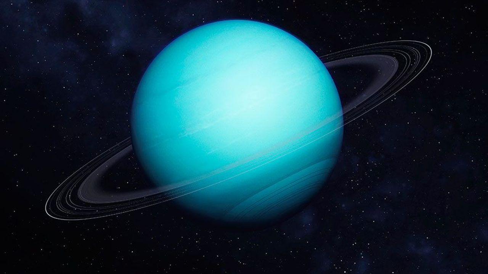

| Mercury | Mars | Saturn | Uranus | |
|---|---|---|---|---|
| Images of Planets | |
|
|
 |
| Gravity(m/s^2) | 3.7 | 3.7 | 9.0 | 8.7 |
| Length of Day(hour) | 4222.6 | 27.7 | 10.7 | 17.2 |
| Distance from Sun(10^6 km) | 57.9 | 228.0 | 1432.0 | 2867.0 |
| Perihelion(10^6 km) | 46.0 | 206.7 | 1357.6 | 2732.7 |
| Aphelion(10^6 km) | 69.8 | 249.3 | 1506.5 | 3001.4 |
| Orbital period(days) | 88.0 | 687.0 | 10,747 | 30,589 |
| Number of moons | 0 | 2 | 146 | 28 |